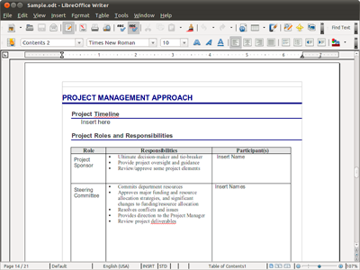

Libre Office
- Free Office program
Libre Office는 무료 Office 프로그램으로, Microsoft Office와 동일한 기능을 대다수 가지고 있습니다.

Libre Office 포함 프로그램 목록(클릭해서 펼쳐보기)
LibreOffice Writer - 워드프로세서
LibreOffice Impress - 프레젠테이션
LibreOffice Draw - 벡터 그래픽
LibreOffice Calc - 스프레드시트
LibreOffice Math - 수식 표현
LibreOffice Base - 데이터베이스
Libre Office는 자체적인 ODF 오픈 소스 확장자(odt, ods, odp 등)와
Microsoft Office에서 사용하는 확장자(docx, pptx 등)이 전부 호환됩니다.
MS Office 확장자는 편집도 가능하며, ODF로 생성된 파일도 자체적으로 MS Office 확장자로 변환이 가능합니다.
즉, MS Office의 무료판이라고 생각할 수 있겠네요.
여담으로 한글의 HWP 확장자도 지원을 하지만 한국에서만 사용하는 확장자고,
무료 오픈 소스 프로그램이기 때문에 MS Office 처럼 완벽하게 지원을 하지는 않습니다.
아래 사이트에서 다운로드가 가능합니다.
official site